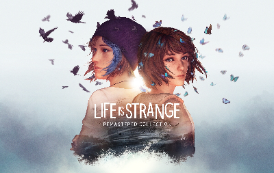

Life is Strange is a choice story-based video game, with 5 episodes, released in January 2015. It's content became so famous that there are 5 more games, all related to one another. Max Caulfield is an 18 year-old girl that stepped in a town far from unfamiliar so she could go to college and study photography with Mark Jefferson, a teacher whose portraits are well-known in the US. Max is a shy and nosey protagonist with time-rewinding powers that you will follow throughout these 11 hours of gameplay.
We are going to go over:
